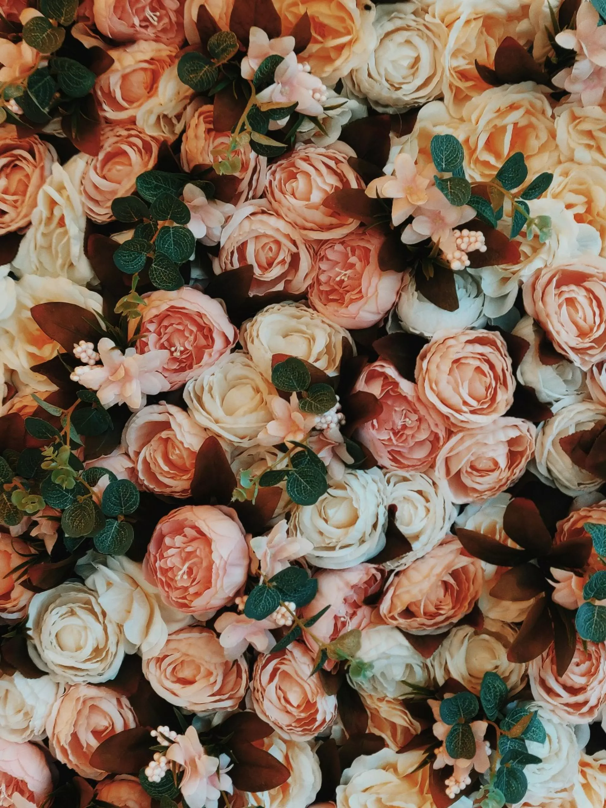
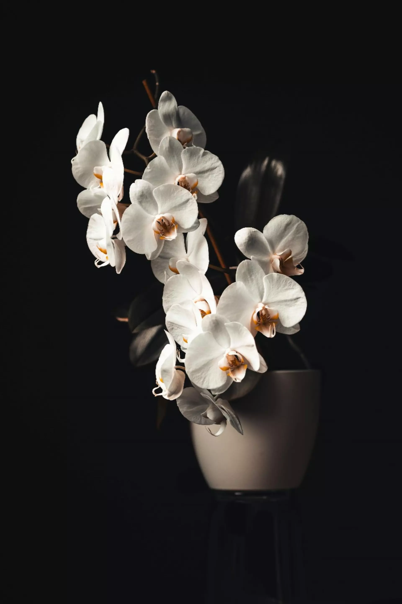

Choosing event flowers is rarely only about beauty. Decorators and planners balance mood, budget, coverage, and how long arrangements hold up under lights and movement. That is why this roses vs gerbera event decor comparison can save both money and styling effort before final sourcing.
If your team is building floral plans for weddings, conferences, launches, or destination events, use this guide to quickly match each bloom to the right setup and timeline.
Quick Comparison Table
| Flower | Best Event Fit | Visual Style | Relative Budget | Vase Life Potential | Handling Notes |
|---|---|---|---|---|---|
| Roses | Weddings, receptions, classic luxury functions | Romantic, dense, timeless | Medium to high | Good | Great for fuller installations and premium focal pieces |
| Gerberas | Day events, festive themes, high-color decor | Bold, cheerful, energetic | Low to medium | Moderate | Best when freshness turnover is high and setup is fast |
| Orchids | Corporate galas, launches, modern luxury spaces | Minimal, premium, architectural | Medium to high | Very good | High visual impact even with fewer stems |
1. Roses for Weddings and Signature Decor

Roses remain the most reliable choice when clients want classic elegance. They create density in arches, stage frames, aisle borders, and centerpieces without looking sparse in photographs.
- Choose roses when romance and volume are the brief.
- Use layered shades for depth in evening events.
- Combine with fillers to optimize cost per square foot of coverage.
2. Gerberas for Color-Forward Day Events
Gerberas are practical for wide color stories and quick turnaround setups. They are strong visual tools for haldi, mehndi, brunch functions, and social celebrations where brightness is the design language.
- Ideal for cheerful event palettes and playful stage backdrops.
- Cost-effective for large quantities and frequent refresh cycles.
- Works well for planners targeting high impact on a tighter budget.
3. Orchids for Corporate and Luxury Styling

When teams ask for the best flowers for corporate events, orchids are usually the first recommendation. Their clean lines and structured silhouette pair well with conference stages, premium podium setups, lounge zones, and brand launch decor.
- Use orchids when the look must feel upscale but not crowded.
- Great for minimalist centerpieces and high-end hospitality spaces.
- Reliable choice for multi-day formats due to durability.
Wholesale Strategy: When to Buy What
For planners sourcing at scale, treat flowers as inventory categories, not just design elements.
- Roses: Book premium shades early in wedding season.
- Gerberas: Use for color volume and fast replenishment jobs.
- Orchids: Secure orchid wholesale flowers for corporate calendars and luxury events where consistency matters.
A mixed purchasing strategy often gives the strongest result: roses for emotional focus, gerberas for fill and energy, and orchids for statement structure.
Final Verdict
If your event demands classic romance, pick roses. If it needs vibrant daytime coverage, pick gerberas. If your design brief is premium and corporate, orchids are the most efficient visual upgrade.
For most large events, the best answer is not one flower. It is a planned blend based on atmosphere, budget, and timeline.
Need help planning flower quantities for your next event?
Fleur Vine can help
you source, schedule, and stage flowers for weddings, corporate events, and large-format decor.